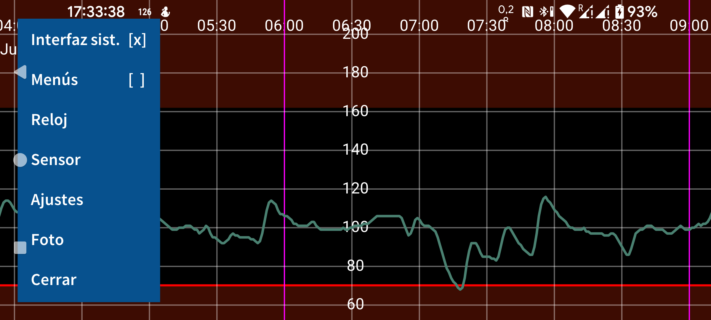
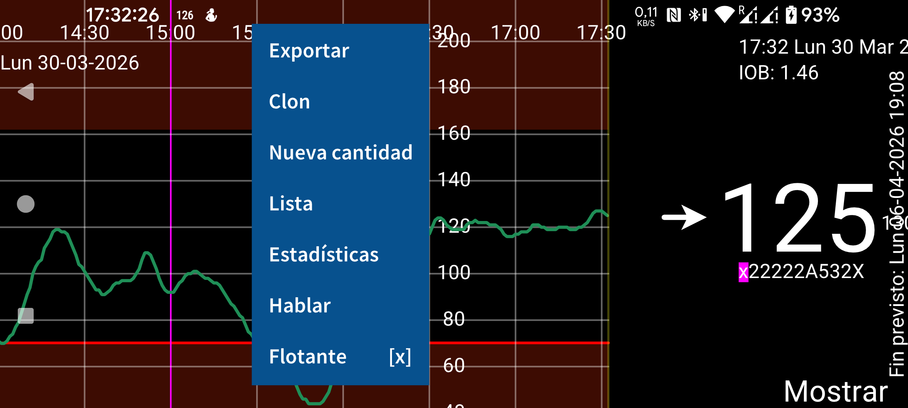
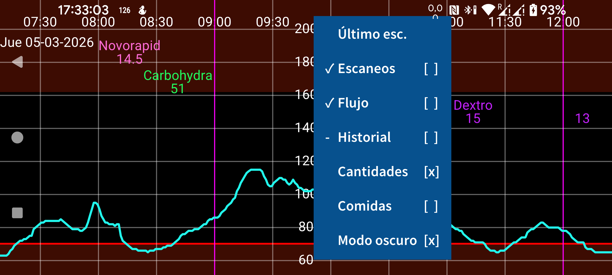
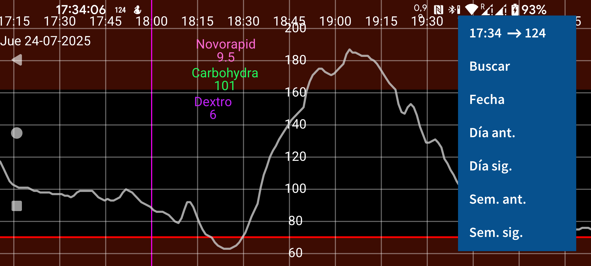

ar be de es fr it nl pl pt ru tr uk uz zh en
Juggluco es una app para el control de la glucosa en sangre de personas con diabetes. Puede escanear sensores FreeStyle Libre (0 y 2) mediante NFC y recibir por Bluetooth valores de glucosa de sensores FreeStyle Libre 2, 2+, 3, 3+, Sibionics GS1Sb, Dexcom G7/ONE+, Accu-Chek SmartGuide, CareSens Air y Aidex X.
La primera vez que ejecutes el programa, puedes escanear un sensor FreeStyle Libre 2 acercándolo al lector NFC del teléfono. Después, Juggluco intentará establecer una conexión Bluetooth con los sensores FreeStyle Libre 2 y recibir un valor de glucosa cada minuto sin necesidad de escanear.
Para tomar el control de un sensor FreeStyle Libre 3 o 3+ activado con la app Libre 3 de Abbott, tienes que indicar en Ajustes → Intercambiar datos → Libreview los datos de la cuenta Libreview que usaste para activarlo, pulsar Obtener ID de cuenta y esperar a que llegue el ID de cuenta antes de escanear. No es posible tomar el control de un sensor Libre 3 iniciado con el lector FreeStyle Libre 3 ni con la app estadounidense de Libre, ni para Libre 2 ni para Libre 3. Todos los sensores mencionados pueden usarse con Juggluco cuando no han sido activados por otra app.
Para conectarte a sensores Sibionics GS1Sb, Dexcom G7/ONE+, Accu-Chek SmartGuide, CareSens Air o Aidex X, tienes que escanear su matriz de datos con menú izquierdo → Foto. Los sensores Dexcom G7/ONE+ se emparejan por Bluetooth, y en la mayoría de los teléfonos tienes que aceptar ese emparejamiento. Debes hacerlo muy rápido; si no, tendrás que esperar otros 5 minutos. Por eso conviene impedir que la pantalla se apague. En Samsung Galaxy Watch 4 y 7 no hace falta aceptar el emparejamiento. Los sensores Dexcom G7/ONE+ agotados siguen activos por Bluetooth durante mucho tiempo después de dejar de registrar valores. Para evitar que Juggluco intente emparejarse con el sensor equivocado, mantén los sensores antiguos fuera del alcance del Bluetooth, por ejemplo a 15 metros de distancia, especialmente si el sensor viejo tiene el mismo PIN que el nuevo. Apaga, fuerza el cierre o desinstala las apps y dispositivos que antes se conectaban con el sensor. Durante el emparejamiento de los sensores Accu-Chek SmartGuide hay que introducir un PIN.
Consulta https://www.juggluco.nl/Juggluco/sensors para obtener más información sobre la conexión con sensores.
El programa contiene cuatro menús. Tocando una parte vacía de la pantalla puedes abrir un menú. Tocar el cuarto izquierdo de la pantalla abre el menú izquierdo; tocar la parte izquierda de la zona central abre el segundo menú; tocar la parte derecha de la zona central abre el tercer menú; y tocar el cuarto derecho abre el cuarto menú.
15:10 ↗ 106 |
Fecha |
Día ant. |
Día sig. |
Sem. ant. |
Sem. sig. |
Desplazando el dedo a izquierda y derecha por la pantalla puedes mover la curva hacia un lado u otro. También puedes hacerlo con el menú de movimiento de la derecha. Usa Fecha para seleccionar una fecha y Buscar para buscar valores de glucosa y cantidades introducidas. El primer elemento del menú derecho es la hora actual; al seleccionarlo saltas al extremo derecho del gráfico, es decir, al momento actual.
Si en Ajustes está activado Escala manual de glucosa, mover el dedo hacia arriba y abajo en la parte superior de la pantalla cambia el máximo del gráfico, y hacerlo en la parte inferior cambia el mínimo. Si en Ajustes está activado Escala manual del tiempo, puedes aumentar o reducir el tiempo mostrado en la pantalla cambiando la distancia entre dos dedos.
Último esc. |
Escaneos [x] |
Flujo [x] |
Historial [x] |
Cantidades [x] |
Comidas [ ] |
Modo oscuro [x] |
La parte derecha del menú central contiene las opciones de visualización. Para ver el último escaneo, toca el primer elemento.
Una cruz detrás de Escaneos significa que los escaneos se muestran en el gráfico. Un escaneo es el valor actual de glucosa que obtienes al escanear un sensor Libre 0 o 2. El escaneo también transfiere al teléfono mediciones cada 15 minutos de las últimas 8 horas. La visualización de esos valores se controla tocando Historial. Los sensores Libre 3 envían esos valores de historial por Bluetooth cada 5 minutos. Flujo son los valores de glucosa enviados cada minuto por Bluetooth desde sensores FreeStyle Libre 2 y 3 a la app.
Puedes introducir todo tipo de cantidades, con la etiqueta que quieras, para documentar insulina, carbohidratos y actividades. Se muestran en el gráfico de glucosa a una altura fija en la fecha y hora indicadas. Al tocar puntos del gráfico o una cantidad introducida, aparece información sobre ese elemento. Puedes editar una cantidad manteniéndola pulsada. También es posible editarla a través de Lista en el menú central izquierdo y tocando el elemento correspondiente.
Cantidades determina si se muestran las cantidades introducidas. En Ajustes puedes especificar qué etiquetas quieres usar para esos números. Encima de una cantidad se muestra la etiqueta correspondiente.
Lista |
Flotante [ ] |
Aquí encontrarás Exportar, Clon, Nueva cantidad, Lista, Estadísticas, Hablar y Flotante.
Puedes introducir cantidades tocando Nueva cantidad en el menú central izquierdo. Exportar guarda los datos en un archivo con formato .tsv (valores separados por tabuladores). Clon permite enviar datos por IP/TCP a esta app ejecutándose en otro dispositivo para mostrar la misma información allí. Lista muestra una lista de las cantidades introducidas.
Si Juggluco ha recibido suficientes valores de glucosa por Bluetooth, puedes ver estadísticas tocando Estadísticas. Muestra el porcentaje de mediciones dentro de determinados intervalos de glucosa, el indicador de gestión de la glucosa (un predictor de la HbA1c), la variabilidad de la glucosa y un gráfico de resumen que muestra, en cada momento del día, el valor de glucosa por debajo del cual se sitúan el 100 %, 95 %, 75 %, 50 %, 25 % y 0 % de los valores.
En Hablar puedes hacer que Juggluco lea en voz alta los valores de glucosa entrantes, los elementos tocados en el gráfico o los mensajes. Flotante activa Glucosa flotante, un valor de glucosa presente en la pantalla por encima de otras apps. En Ajustes puedes cambiar su color y su tamaño.
Interfaz sist. [ ] |
Menús [ ] |
Foto |
Cerrar |
Detener alarma |
En el menú izquierdo encontrarás Interfaz sist., Menús, Reloj, Sensor, Ajustes, Foto y Cerrar. Detener alarma aparece cuando hay una alarma activa.
En Ajustes puedes establecer la unidad de glucosa en mmol/L o mg/dL, definir etiquetas, configurar alarmas de glucosa, recordatorios de medicación y rangos de visualización. Interfaz sist. determina si se muestran los controles de Android y la barra de estado. En Reloj puedes hacer que Juggluco envíe datos a distintos relojes inteligentes. En Sensor puedes ver cómo va la conexión con el sensor. Toca Menús para mostrar todos los menús al mismo tiempo. Cerrar puede usarse para salir de Juggluco.